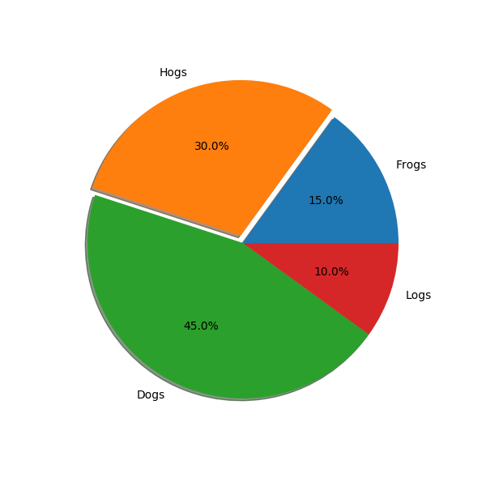

Version 3.1.1
Matplotlib is hiring a Research Software Engineering Fellow! See discourse for details. Apply by January 3, 2020
Note
Click here to download the full example code
Demonstrate SVG filtering effects which might be used with mpl. The pie chart drawing code is borrowed from pie_demo.py
Note that the filtering effects are only effective if your svg renderer support it.
Out:
Saving 'svg_filter_pie.svg'
import matplotlib.pyplot as plt
from matplotlib.patches import Shadow
# make a square figure and axes
fig = plt.figure(figsize=(6, 6))
ax = fig.add_axes([0.1, 0.1, 0.8, 0.8])
labels = 'Frogs', 'Hogs', 'Dogs', 'Logs'
fracs = [15, 30, 45, 10]
explode = (0, 0.05, 0, 0)
# We want to draw the shadow for each pie but we will not use "shadow"
# option as it does'n save the references to the shadow patches.
pies = ax.pie(fracs, explode=explode, labels=labels, autopct='%1.1f%%')
for w in pies[0]:
# set the id with the label.
w.set_gid(w.get_label())
# we don't want to draw the edge of the pie
w.set_edgecolor("none")
for w in pies[0]:
# create shadow patch
s = Shadow(w, -0.01, -0.01)
s.set_gid(w.get_gid() + "_shadow")
s.set_zorder(w.get_zorder() - 0.1)
ax.add_patch(s)
# save
from io import BytesIO
f = BytesIO()
plt.savefig(f, format="svg")
import xml.etree.cElementTree as ET
# filter definition for shadow using a gaussian blur
# and lightening effect.
# The lightening filter is copied from http://www.w3.org/TR/SVG/filters.html
# I tested it with Inkscape and Firefox3. "Gaussian blur" is supported
# in both, but the lightening effect only in the Inkscape. Also note
# that, Inkscape's exporting also may not support it.
filter_def = """
<defs xmlns='http://www.w3.org/2000/svg' xmlns:xlink='http://www.w3.org/1999/xlink'>
<filter id='dropshadow' height='1.2' width='1.2'>
<feGaussianBlur result='blur' stdDeviation='2'/>
</filter>
<filter id='MyFilter' filterUnits='objectBoundingBox' x='0' y='0' width='1' height='1'>
<feGaussianBlur in='SourceAlpha' stdDeviation='4%' result='blur'/>
<feOffset in='blur' dx='4%' dy='4%' result='offsetBlur'/>
<feSpecularLighting in='blur' surfaceScale='5' specularConstant='.75'
specularExponent='20' lighting-color='#bbbbbb' result='specOut'>
<fePointLight x='-5000%' y='-10000%' z='20000%'/>
</feSpecularLighting>
<feComposite in='specOut' in2='SourceAlpha' operator='in' result='specOut'/>
<feComposite in='SourceGraphic' in2='specOut' operator='arithmetic'
k1='0' k2='1' k3='1' k4='0'/>
</filter>
</defs>
"""
tree, xmlid = ET.XMLID(f.getvalue())
# insert the filter definition in the svg dom tree.
tree.insert(0, ET.XML(filter_def))
for i, pie_name in enumerate(labels):
pie = xmlid[pie_name]
pie.set("filter", 'url(#MyFilter)')
shadow = xmlid[pie_name + "_shadow"]
shadow.set("filter", 'url(#dropshadow)')
fn = "svg_filter_pie.svg"
print("Saving '%s'" % fn)
ET.ElementTree(tree).write(fn)
Keywords: matplotlib code example, codex, python plot, pyplot Gallery generated by Sphinx-Gallery